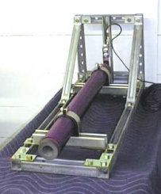

The Rise of a Suitable Test Stand
Rosalie Morin
Static test stands are crucial in the process of designing and creating a successful hybrid motor. It provides a physical setup of acquiring data on temperature, pressure, and thrust of the motor during a test. This article covers the setup of our team’s first test stand, the downsides of it, as well as a brief plan for a future test stand.
The first design of our static test stand resembled that of a coffee table. Large planks of wood were nailed together to provide an elevated and flat surface for the rocket motor to be mounted on. The wood was protected with a layer of sheet metal where two lubricated rails were placed. At the end of the rails, a steel L-shaped stopper was placed in order to stop the rocket from dismounting itself from the stand. The stopper was also designed to hold a load cell to obtain thrust values. An additional wooden structure was built to hold the large nitrous tank close to the stand. Although our test stand is fairly easy to fabricate and assemble, there are a few downsides to it.
The test stand, as the name suggests, must be static. Therefore a strong and robust build is crucial in order to withstand the thrust from the rocket motor. The four legs of our wooden structure as well as the high center of mass of the stand does not provide enough stability or strength to withstand very high thrust from a motor. It’s very difficult to bolt down this structure to any surface to ensure that it wont move. Therefore, in order to provide a strong and robust build, the stand can be made out of galvanized steel. Despite its disadvantage that it is hard to drill or cut through, it would provide the strength and weight we need to withstand high thrust. This structure can have an L-shaped framework with an implementation of several triangles to ensure stability. The use of UniStruts could also be used in order to facilitate the process of bolting down the stand to a surface of greater mass. The idea I’m basing myself off of is that made from Aercon Systems seen in figure 1.
Additionally, no pumping is required with this type of engine. One of the main complications with liquid engines is that the propellant streams must be carefully pumped in the combustion chamber, or else there would be incomplete combustion or the rocket could explode. These additional components, while giving an edge to liquid engines in terms of performance and supreme controllability, also add potential points of failure.
To fully understand the inherent safety of a hybrid rocket engine, the following scenario could be considered. It is always a possibility that something goes wrong during the ignition sequence. The solid motor would not be able to abort the sequence. Rather it would shoot off, only to be controlled by the laws of nature. In the case of a liquid rocket engine, both the fuel and oxidizer would be present (before the flow was stopped) and leave the combustion chamber without combusting. This creates an area which is highly susceptible to explosions. With the hybrid engine, the flow of oxidizer could be cut off much like the liquid engine. And unlike the liquid engine, while some oxidizer would escape the chamber, not much fuel would be present for combustion making it slightly safer in this case. Of course this is not to say solid motors and liquid engines should not be developed. Comparisons such as these give an insight as to why the hybrid rocket engine is inherently safer than its counter parts.
It is interesting to note that nitrous oxide provides another layer of safety because it requires a certain amount of activation energy in order for the oxygen atoms to disassociate before it can be considered a potent oxidizer. Therefore, an intentional ignition source is required to start combustion. While it is possible that accidents occur with nitrous oxide, it is not likely if even the most basic of safety standards are upheld.
To conclude, although there is always a risk while dealing with rockets, hybrid engines are inherently safer than their competitors and ideal for the types of launches done by the uOttawa Student Team of Aeronautics and Rocketry.